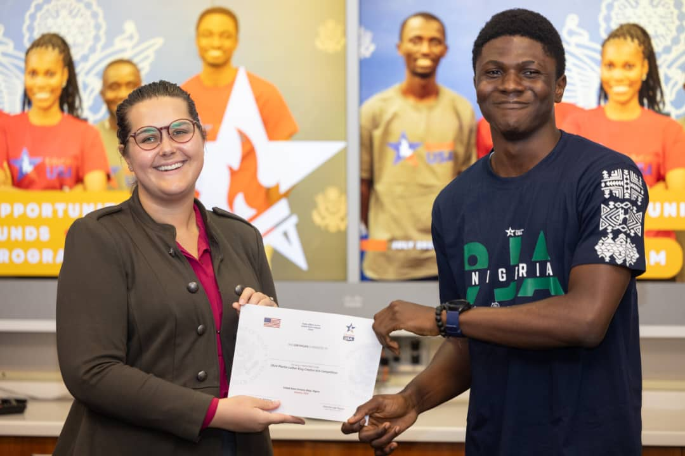
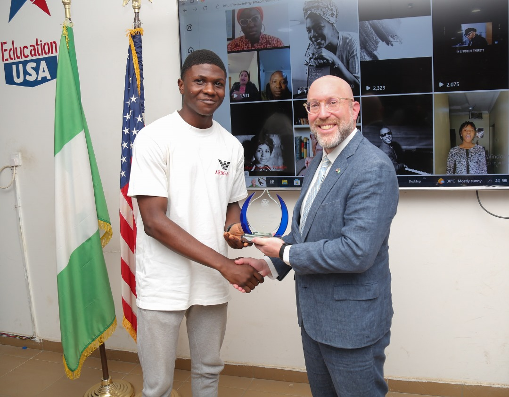
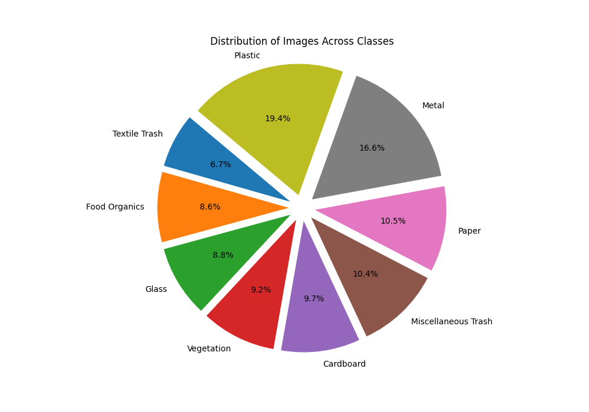
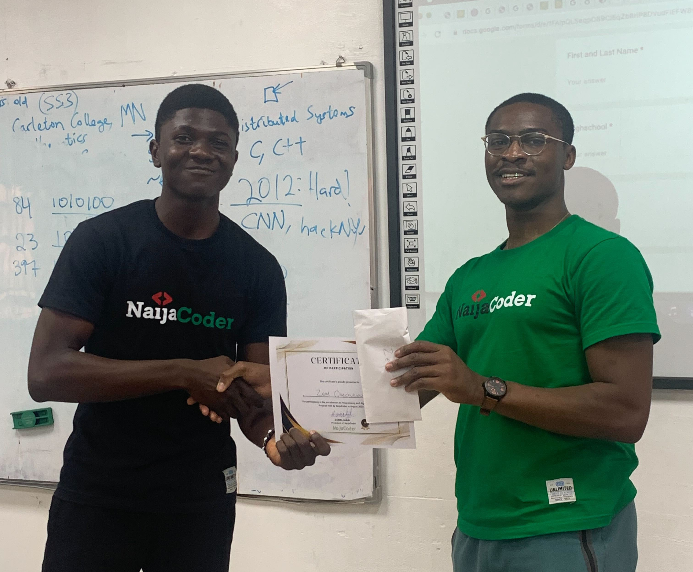

July 11, 2024
It was nothing short of exciting: After the very tasking application year spanning 6 months,
admitted students from NIGERIA gathered at this event for an insightful orientation regarding schooling in the U.S.
I attended the event as an incoming freshman at Fisk University, and I received an award for my active participation
and involvement in supporting the community as an Opportunity Funds Scholar.


First Runner-Up Award presented by Deputy Chief of Mission David Greene. My entry video was a poem that paid tribute to my Black hero, Nikki Giovanni

Conducted research on reducing environmental waste using deep learning under Dr. Zakiya Barnes.
Developed a convolutional neural network achieving over 90% accuracy in trash classification
and contributed to discussions on economic models.

Learnt the basics of Algorithms and Programming from seasoned Ivy League alumnus, Daniel Alabi and Alida Monaco. Explored data analysis techniques for climate change solutions

Engaged in comprehensive workshops and presentations, built a network with industry professionals, and received valuable mentorship, including a mock interview with PwC.

Mentored over 20 students in advanced mathematics and LaTeX, organized nationwide educational campaigns reaching 350+ students, and increased project productivity by 27% through effective leadership.

I'm currently a Headstarter Summer Fellow in a 7-week software engineering program.
This fellowship includes building AI projects, weekend hackathons, and a final project aimed at 1000+ users. Additionally, it offers interview prep, resume reviews, and feedback from experienced engineers.
Through this fellowship, I developed the skills to design this website project I'm working on (My Landing Page).